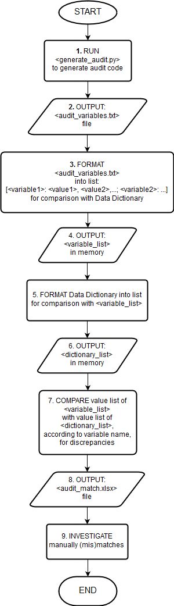

Author: ditdahdash
Last Code Update: 20161012
Version: v1.0
This is a testbed for code that will eventually be ported to Sandbox to do an automated audit of the database table. This code uses the text file variables.sample as the example file to format into <variable_list> for comparison with the Data Dictionary.
Please reference the flow chart below the To-Do table for a description of each "audit_flow step #."
| audit_flow step # | Issue(s) | TO DO now | TO DO later |
|---|---|---|---|
| 3(a) | Special character '\t' not recognized by code. | COMPLETED code workaround: split on a different special character. | This step is currently done in Sublime, which could be introducing the special character issue. Code this step in Python, which will also help with automation, and re-test for special character recognition. |
| 3(b) | <variable_list> is not in desired format for comparison. | WRITE code to get rid of indices, strip extra white space, git rid of extra brackets, and replace colons between values with commas. | |
| 5(a) | Conversion from Data Dictionary Excel file to dictionary list is not completely automated. | OBTAIN standardized, non-pdf format of Data Dictionary. COMPLETED copy & paste relevant Data Dictionary fields into more manipulable Excel file. | Automate conversion process to sync with format of standardized Data Dictionary, once received. |
| 5(b) | Data Dictionary value definitions are not standardized; some have quotes, some do not, etc. | REQUEST vendor separate values and descriptions, as modeled in previously identified example, as part of its Data Dictionary standardization process. | WRITE code to identify values by looking in description field within single and double quotes and after "=". |
| 5(c) | Code needs to check Data Dictionary for truncated value definitions. | SKIM manually for truncated value definitions and CHECK output of step 8 manually for value mismatches. CROSS-REFERENCE detected discrepancies with old Data Dictionary. | WRITE code to flag if there is not a "." as end-of-line character in description field. Make sure this code syncs with format of standardized Data Dictionary, once received. |
| 5(d) | Many of the Data Dictionary completed description fields do not terminate with "." | REQUEST vendor use "." as end-of-line character for all description fields as part of its Data Dictionary standardization process. | |
| 7(a) | Code needs to check whether all values in <variable_list> are in <dictionary_list>. | WRITE code to use values in <variable_list> as regular expressions to search on in <dictionary_list>. | |
| 7(b) | Code needs to check whether all values in <dictionary_list> are in <variable_list>. | CHECK output of step 8 manually for values in <dictionary_list> that are not in <variable_list> (and vice-versa). | Use method indicated in Issue 5(b) for code to generate a value list for <dictionary_list>; once generated, code can compare directly with value list of <variable_list> for discrepancies. |
| 8 | Output comparison file needs to be generated. | USE openpyxl library to write final results of (mis)matches to Excel file. |
Please reference flow chart below.

A list of test scripts will be added as they are created.